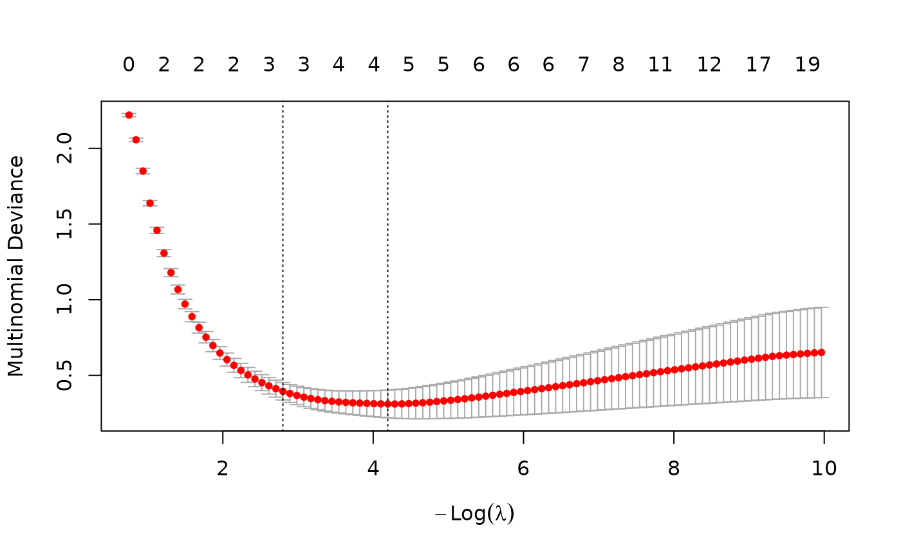
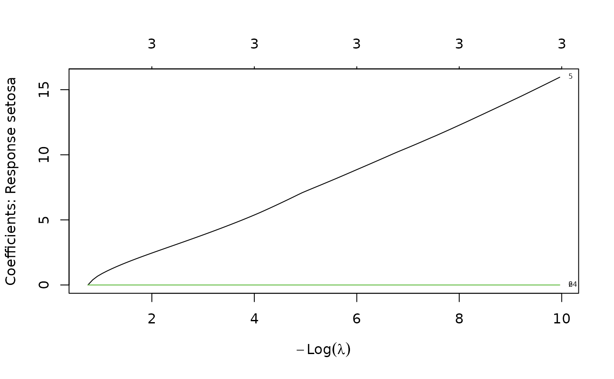
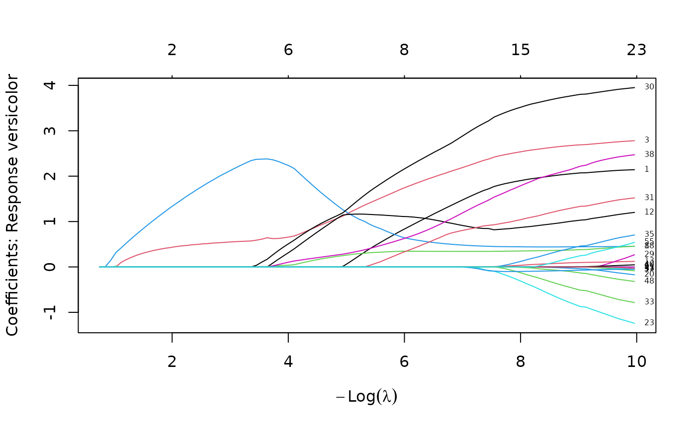
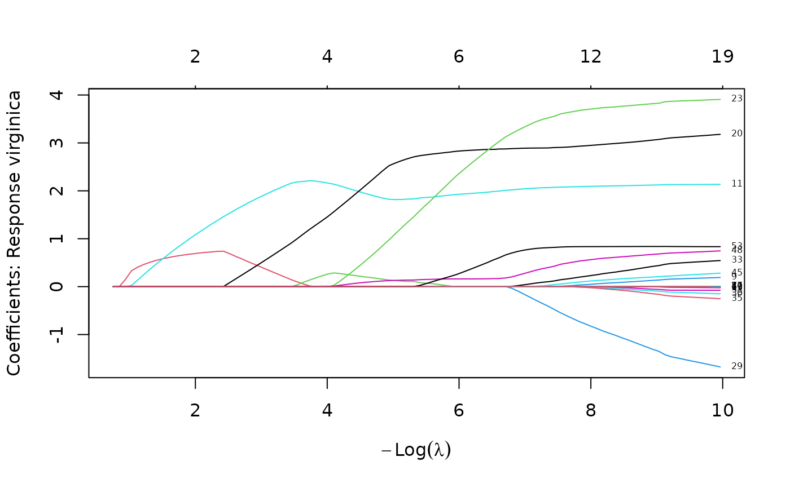

Build a classifier based on association rules mined for an input dataset and weighted with LASSO-regularized logistic regression following RCAR (Azmi et al., 2019). RCAR+ extends RCAR from a binary classifier to a multiclass classifier and can use support-balanced CARs.
Usage
RCAR(
formula,
data,
lambda = NULL,
alpha = 1,
glmnet.args = NULL,
cv.glmnet.args = NULL,
parameter = NULL,
control = NULL,
balanceSupport = FALSE,
disc.method = "mdlp",
verbose = FALSE,
...
)Arguments
- formula
A symbolic description of the model to be fitted. Has to be of form
class ~ .orclass ~ predictor1 + predictor2.- data
A data.frame or arules::transactions containing the training data. Data frames are automatically discretized and converted to transactions with
prepareTransactions().- lambda
The amount of weight given to regularization during the logistic regression learning process. If not specified (
NULL) then cross-validation is used to determine the best value (see Details section).- alpha
The elastic net mixing parameter.
alpha = 1is the lasso penalty (default RCAR), andalpha = 0the ridge penalty.- cv.glmnet.args, glmnet.args
A list of arguments passed on to
glmnet::cv.glmnet()andglmnet::glmnet(), respectively. See Example section.- parameter, control
Optional parameter and control lists for
arules::apriori().- balanceSupport
balanceSupport parameter passed to
mineCARs().- disc.method
Discretization method for factorizing numeric input (default:
"mdlp"). SeediscretizeDF.supervised()for more supervised discretization methods.- verbose
Report progress?
- ...
For convenience, additional parameters are used to create the
parametercontrol list forarules::apriori()(e.g., to specify the support and confidence thresholds).
Value
Returns an object of class CBA representing the trained
classifier with the additional field model containing a list with the
following elements:
- reg_model
the multinomial logistic regression model as an object of class glmnet::glmnet.
- cv
only available if
lambda = NULLwas specified. Contains the results of the cross-validation used to determine lambda. We use by defaultlambda.1seto determine lambda.- all_rules
the actual classifier only contains the rules with non-zero weights. This field contains all rules used to build the classifier, including the rules with a weight of zero. This is consistent with the model in
reg_model.
Details
RCAR+ extends RCAR from a binary classifier to a multiclass classifier using regularized multinomial logistic regression via glmnet.
In arulesCBA, the class variable is always represented by a set of items.
For a binary classification problem, we use an item and its complement
(typically called <item label>=TRUE and <item label>=FALSE). For
a multiclass classification problem, we use one item for each possible class
label (format <class item>=<label>). See prepareTransactions() for details.
RCAR+ first mines CARs to find itemsets (LHS of the CARs) that are related to the class items. Then, a transaction x lhs(CAR) coverage matrix \(X\) is created. The matrix contains a 1 if the LHS of the CAR applies to the transaction, and 0 otherwise. A regularized multinomial logistic model to predict the true class \(y\) for each transaction given \(X\) is fitted. Note that the RHS of the CARs are actually ignored in this process, so the algorithm effectively uses rules consisting of each LHS of a CAR paired with each class label. This is important to keep in mind when trying to interpret the rules used in the classifier.
If lambda for regularization is not specified during training (lambda = NULL),
cross-validation determines the largest value of lambda whose error is within
one standard error of the minimum (see glmnet::cv.glmnet() for how to perform
cross-validation in parallel).
For the final classifier, we only keep the rules that have a weight greater than zero for at least one class label. The rule weights are the model's beta coefficients.
Prediction for a new transaction is performed in two steps:
Translate the transaction into a 0-1 coverage vector indicating which class association rules have an LHS that covers the transaction.
Calculate the predicted label given the multinomial logistic regression model.
References
M. Azmi, G.C. Runger, and A. Berrado (2019). Interpretable regularized class association rules algorithm for classification in a categorical data space. Information Sciences, Volume 483, May 2019. Pages 313-331.
See also
Other classifiers:
CBA(),
CBA_ruleset(),
FOIL(),
LUCS_KDD_CBA,
RWeka_CBA,
predict.CBA()
Examples
data("iris")
classifier <- RCAR(Species ~ ., iris)
classifier
#> CBA Classifier Object
#> Formula: Species ~ .
#> Number of rules: 8
#> Default Class: virginica
#> Classification method: logit
#> Description: RCAR+ based on RCAR (Azmi et al., 2019)
#>
# inspect the rule base sorted by the largest class weight
inspect(sort(classifier$rules, by = "weight"))
#> lhs rhs support confidence coverage lift count weight weight.setosa weight.versicolor weight.virginica
#> [1] {Petal.Length=[-Inf,2.45)} => {Species=setosa} 0.3333333 1.0000000 0.3333333 3.000000 50 3.561421e+00 3.561421e+00 0.0000000 0.000000e+00
#> [2] {Petal.Width=[0.8,1.75)} => {Species=versicolor} 0.3266667 0.9074074 0.3600000 2.722222 49 1.987745e+00 0.000000e+00 1.9877448 0.000000e+00
#> [3] {Petal.Length=[4.75, Inf]} => {Species=virginica} 0.3266667 0.8909091 0.3666667 2.672727 49 1.747598e+00 0.000000e+00 0.0000000 1.747598e+00
#> [4] {Petal.Length=[2.45,4.75)} => {Species=versicolor} 0.2933333 0.9777778 0.3000000 2.933333 44 5.313324e-01 0.000000e+00 0.5313324 0.000000e+00
#> [5] {Petal.Width=[1.75, Inf]} => {Species=virginica} 0.3000000 0.9782609 0.3066667 2.934783 45 5.208857e-01 0.000000e+00 0.0000000 5.208857e-01
#> [6] {Sepal.Length=[6.15, Inf],
#> Petal.Width=[1.75, Inf]} => {Species=virginica} 0.2466667 1.0000000 0.2466667 3.000000 37 3.234963e-01 0.000000e+00 0.0000000 3.234963e-01
#> [7] {Petal.Length=[-Inf,2.45),
#> Petal.Width=[-Inf,0.8)} => {Species=setosa} 0.3333333 1.0000000 0.3333333 3.000000 50 4.581908e-14 4.581908e-14 0.0000000 0.000000e+00
#> [8] {Sepal.Length=[6.15, Inf],
#> Petal.Length=[4.75, Inf],
#> Petal.Width=[1.75, Inf]} => {Species=virginica} 0.2466667 1.0000000 0.2466667 3.000000 37 1.701833e-14 0.000000e+00 0.0000000 1.701833e-14
# make predictions for the first few instances of iris
predict(classifier, head(iris))
#> [1] setosa setosa setosa setosa setosa setosa
#> Levels: setosa versicolor virginica
table(pred = predict(classifier, iris), true = iris$Species)
#> true
#> pred setosa versicolor virginica
#> setosa 50 0 0
#> versicolor 0 49 5
#> virginica 0 1 45
# plot the cross-validation curve as a function of lambda and add a
# red line at lambda.1se used to determine lambda.
plot(classifier$model$cv)
abline(v = log(classifier$model$cv$lambda.1se), col = "red")

# plot the coefficient profile plot (regularization path) for each class
# label. Note the line for the chosen lambda is only added to the last plot.
# You can manually add it to the others.
plot(classifier$model$reg_model, xvar = "lambda", label = TRUE)


abline(v = log(classifier$model$cv$lambda.1se), col = "red")

#' inspect rule 11 which has a large weight for class virginica
inspect(classifier$model$all_rules[11])
#> lhs rhs support confidence
#> [1] {Petal.Length=[4.75, Inf]} => {Species=virginica} 0.3266667 0.8909091
#> coverage lift count weight weight.setosa weight.versicolor
#> [1] 0.3666667 2.672727 49 1.747598 0 0
#> weight.virginica
#> [1] 1.747598